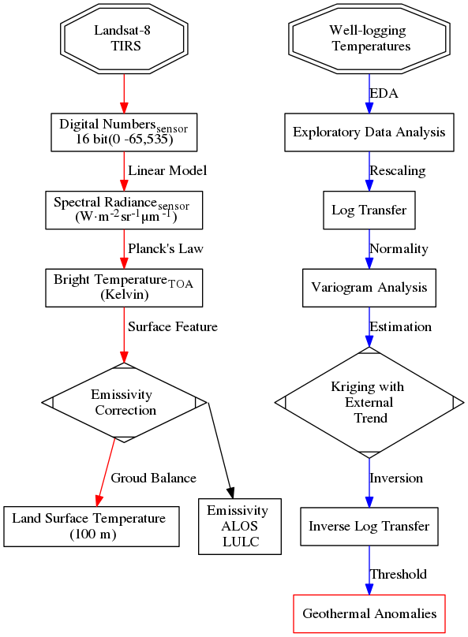

p1402Workflow
digraph{
fontname="Times";
fontsize = 12;
splines = false;
ranksep = 0.3;
// nodesep = 0.5;
node[shape = box]
// set Node
L8 [label = "Landsat-8 \n TIRS", shape = doubleoctagon]
DN [label = <Digital Numbers<SUB>sensor</SUB><BR/>16 bit(0 -65,535)>]
Rad [label = <Spectral Radiance<SUB>sensor</SUB> <BR/> (W·m<SUP>-2</SUP>sr<SUP>-1</SUP>μm<SUP>-1</SUP>)>]
BT [label = <Brightness Temperature<SUB>TOA</SUB><BR/>(Kelvin, 30 m)>]
EC [label = "Emissivity \n Correction", shape = Mdiamond]
LULC [label = "ALOS \n LULC \n(30 m)"]
LST [label = "Land Surface Temperature \n (100 m)"]
TA [label = "Thermal Anomalies"]
// path
subgraph TIRS {
edge [color = red, weight=8]
L8 -> DN
DN -> Rad [label = " Linear Model"]
Rad -> BT [label = " Planck's Law"]
BT -> EC [label = " Surface Feature"]
EC -> LST [label = " Arits et al"]
LST -> TA [label = " Residuals"]
TA -> GTA
}
T [label = "Well-logging \n Temperatures", shape = doubleoctagon]
EDA [label = "Exploratory Data Analysis"]
log [label = "Log Transfer"]
vgm [label = "Variogram Analysis"]
KED [label = "Kriging with \n External \n Trend", shape = Mdiamond]
invlog [label = "Inverse Log Transfer"]
GTA [label = "Geothermal Anomalies", color = red]
//part2
subgraph Temperatures {
edge [color = "blue", weight = 10]
T -> EDA [label = " EDA"]
EDA -> log [label = " Rescaling"]
log -> vgm [label = " Normality"]
vgm -> KED [label = " Estimation"]
KED -> invlog [label = " Inversion"]
invlog -> GTA [label = " Threshold"]
}
//part3
subgraph lulc {
edge [color = "green"]
EC:e -> LULC [label = " Emissivity", dir = back]
LULC -> GTA:w [label = " Human \n Imapacts"]
}
{rank =same; L8,T}
{rank =same; TA,GTA}
}

Figure 1: Workflow of paper 1402